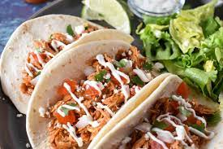

These shredded chicken tacos will give you a new, delicious way to make chicken and shake up taco night all in one easy recipe. In this recipe, chicken breasts are cooked in a flavorful tomato sauce. Then it’s shredded and added back to the sauce until it soaks it all up.
Ingredients List
- 1 tablespoon Chili Powder
- 1 teaspoon Salt
- 1 teaspoon Garlic Powder
- 1/2 teaspoon Cumin
- 1.4 teaspoon Black Pepper
- 2 tablespoons Canola Oil
- 1 pound Chicken Breast
- 1 (8 ounce) can Tomato Sauce
- 8 ounces Water
- Tortillas
Instructions
- Combine chili powder, salt, garlic poweder, onion powder,
cumin, and black pepper in a small bowl
- Brown the chicken in a large skillet over medium heat
- Set chicken aside, do not wash the skillet
- over medium heat, add the tomato sauce, water, and seasoning mix,
stir to combine.
- When the sauce begins to simer, add the chicken to the skillet
- Lower the heat to medium-low, cover, and cook for 15-20 minutes
- Keep sauce at a simmer, turn chicken half way through and stir occasionally
- Remove chicken from skillet and coninue cooking sauce, covered on low heat
- Shred the chicken on a cutting board with two forks
- Return the chicken to the skillet and cook until warmed and sauce is absorbed
- Serve with tortillas and your favorite fixings